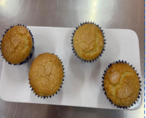

← Volver al módulo 1

Magdalena Española
Magdalenas esponjosas con delicado sabor a limón, perfectas para el desayuno o merienda.
Ingredientes
- 200 gr de harina
- 3 huevos
- ½ taza de aceite
- 2 cucharillas de polvo de hornear (PH)
- 130 gr de azúcar
- Ralladura de limón
- Pirotines
Preparación
Realizar el mise en place.
Batir los huevos, añadir el azúcar y el aceite en forma de hilo.
En otro bol, mezclar la harina con la ralladura de limón y el PH. Incorporar poco a poco la mezcla de huevos y mezclar en forma envolvente.
Verter en pirotines y hornear por 30 minutos a 180 °C.
Decorar con azúcar blanca.